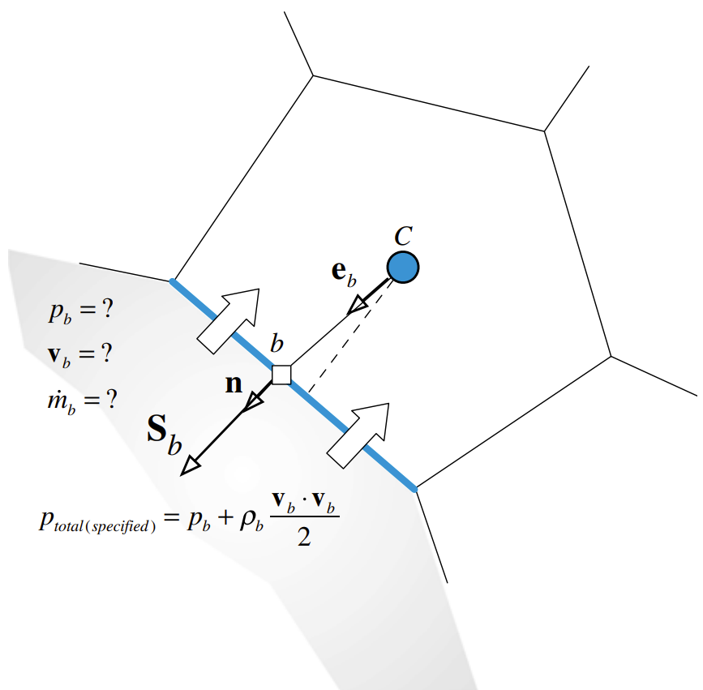
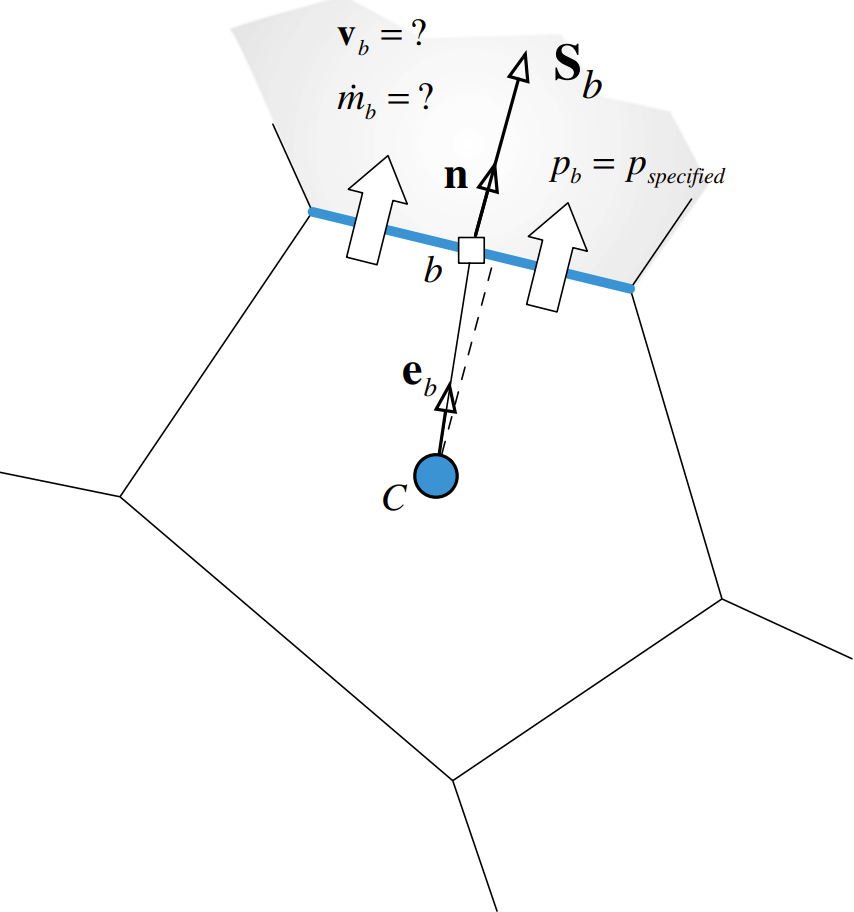
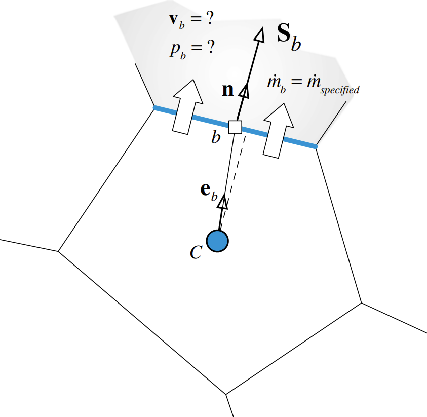
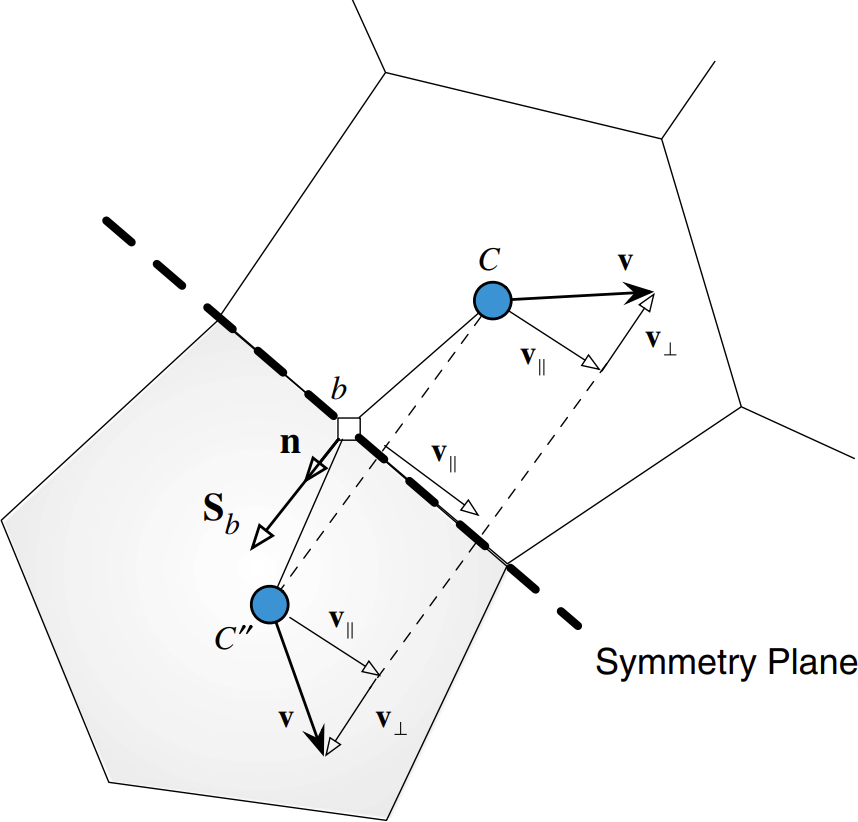

Specified Total Pressure and Velocity Direction

Specified Static Pressure

Specified Mass Flow Rate

Symmetry Boundary Condition

1 F. Moukalled, L. Mangani, M. Darwish. (2015). The Finite Volume Method in Computational Fluid Dynamics: An Advanced Introduction with OpenFOAM® and Matlab. Springer Cham.